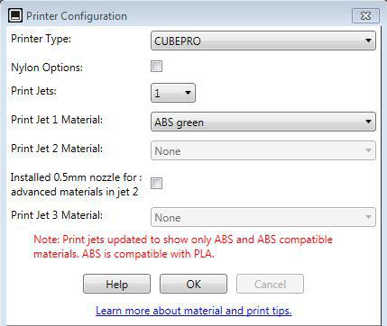

Downloading the 3D Model
Open your internet browser and go to https://grabcad.com.
On the top toolbar hover over community and select library from the drop down menu. Once you have selected library choose solidworks as a filter and you will see several various designs. You can either search a model or select one from this page. .

Once you have chosen a model click download. You will be prompted to create an account and once you complete that the model will be downloaded. Now you will be ready to move on to setting your model up for printing in the Cubepro software.

Click here for the next step.